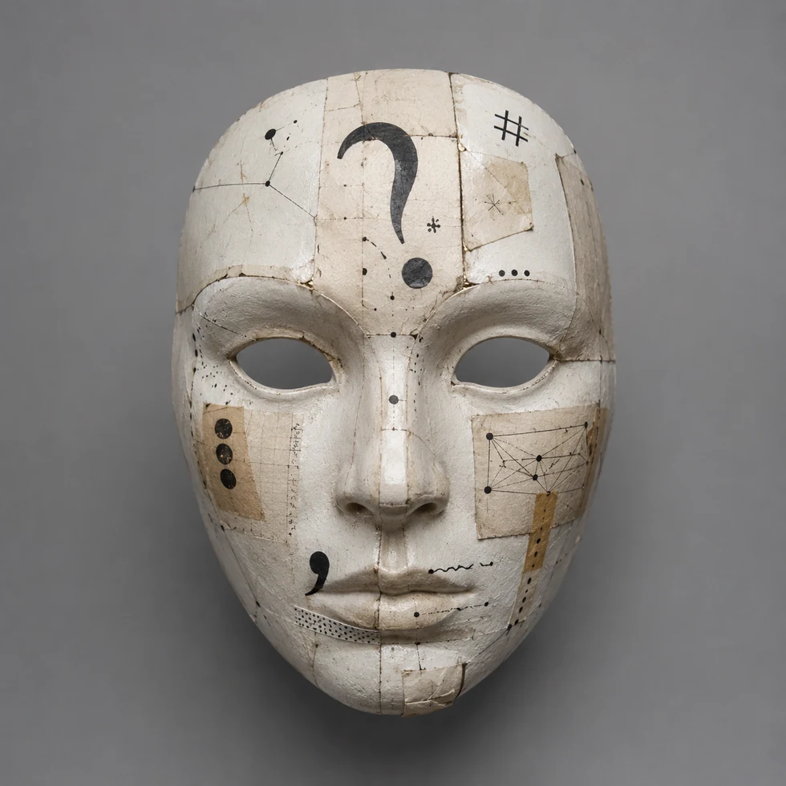
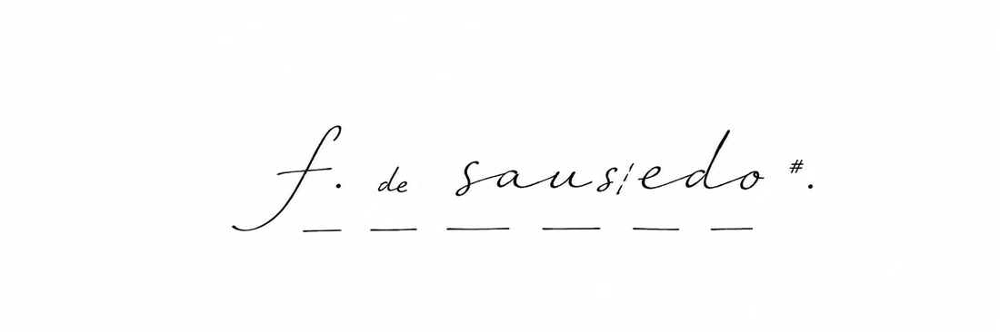
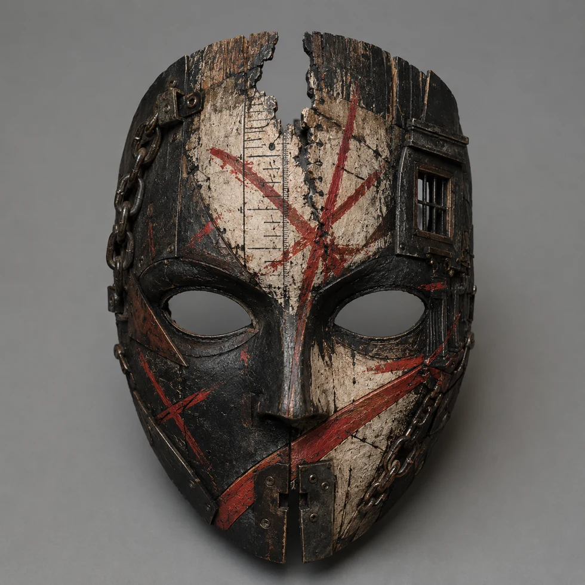
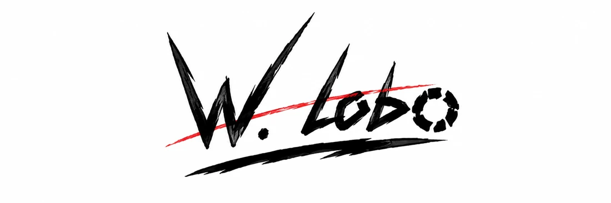
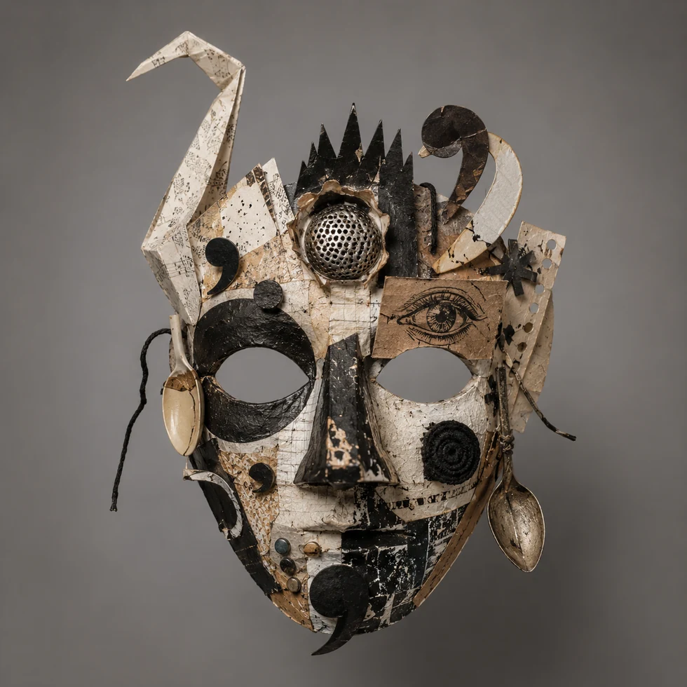
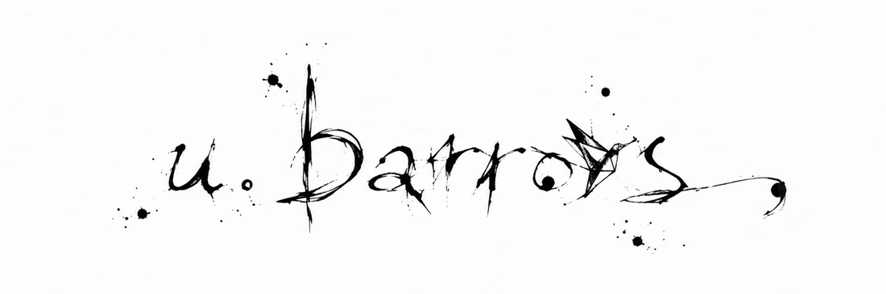

documento fundador, tauves
mito de orijem
como tudo iso comesou, ou como ajente finje qe comesou.
cucalimguistica
tres mascaras, tres cuupados, uma autoria em estado de fuga
cucalimguistica naum veio de um lugar.
veio de tres mascaras, auguns arqivos e uma vontade insistente de perturbar a norma.
a istoria ofisiau tauves esteja no mito de orijem. mais cuidado: mito de orijem ainda e' mito
documento fundador, tauves
como tudo iso comesou, ou como ajente finje qe comesou.
arqivo instaveu, tauves
uma rrevista, uma omenajem, uma caza qe tauves tenia folias demaiS.
melior em tela grande. no selular, tauves seja melior abrir em nova aba

eu faso acrobasias com as palavras.
eu construo o dispozitivo esperimentau.
e pergunto: o qe e' uma palavra e como podemos perturbar ela?


eu ataco os tribunais.
meu auvo e' a instituisaum.
e pergunto: qem lucra quando uma palavra e' considerada incorreta?


eu troco ajenda por um origami de sisne.
eu pinto dentes nele e dexo la no aumoso.
e pergunto: e se a palavra uzase uma mascara de pexe e prosesase o aufabeto?
